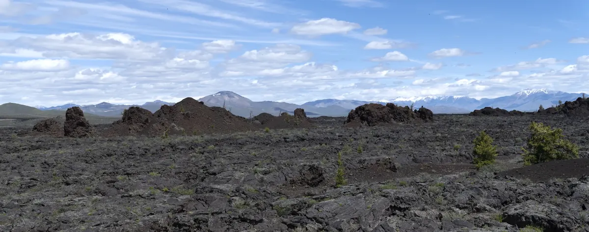
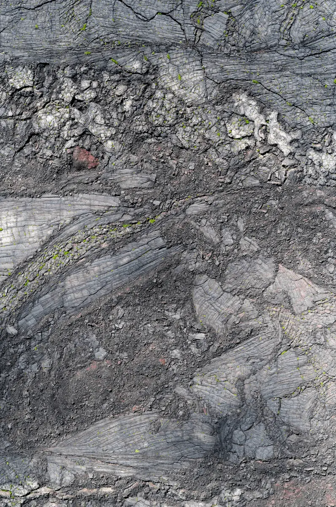

Lisa Wood Studio
LANDSCAPE,
AT THE EDGE
OF ATTENTION
Lisa Wood Studio makes large-scale landscape photographs from remote field sites — volcanic surface, winter darkness, desert and ice — through a practice shaped by exposure, sustained attention, and discovery.

Selected Work
Commissions & Bodies of Work

Commission — 2024
The Observatory
Sun Valley
Five commissioned works for The Observatory Sun Valley, a Viceroy Resort, bringing two Central Idaho field sites — Craters of the Moon and the Camas Prairie — into the building as a visual language for the landscape of Central Idaho.
View the commissionPractice
Lisa Wood
To luxuriate in discomfort is to step into challenging conditions and stay there long enough for perception to change — driven by adventure, rewarded with discovery.
Lisa Wood works at remote field sites across volcanic, desert, winter, and ice terrain, returning with large-scale photographs that ask for the same sustained attention they were made with. Each body of work begins on the ground, in difficult places, and is shaped by exposure and time.